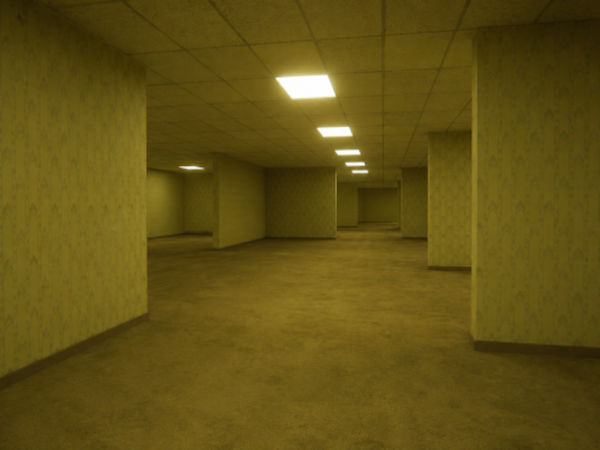

AS BACKROOMS
O Labirinto Sem Fim

"Um lugar onde a realidade parece falhar, os corredores nunca terminam e o silêncio é interrompido apenas pelo zumbido das luzes fluorescentes."
As Backrooms são uma das creepypastas mais conhecidas da internet. O conceito descreve um enorme labirinto de salas aparentemente infinitas, formado por corredores vazios, paredes amareladas e um ambiente que transmite constante desconforto. Embora seja uma obra fictícia, sua atmosfera única inspirou jogos, filmes, animações e milhares de histórias criadas pela comunidade.
A ORIGEM DA LENDA
Em 2019, uma fotografia de uma sala vazia com paredes amarelas foi publicada em um fórum da internet acompanhada por uma breve descrição. O texto afirmava que, caso uma pessoa "escapasse" da realidade por um erro conhecido como noclip, acabaria presa naquele ambiente para sempre. A ideia chamou a atenção de milhares de usuários, que começaram a expandir o universo das Backrooms criando novos níveis, criaturas e teorias. Em pouco tempo, a história deixou de ser apenas uma imagem curiosa e tornou-se uma das creepypastas mais populares da internet.
COMO SÃO AS BACKROOMS?
O ambiente mais conhecido é chamado de Nível 0. Ele é composto por corredores aparentemente intermináveis, iluminados por lâmpadas fluorescentes que produzem um zumbido constante. As paredes possuem um papel de parede amarelado e o carpete parece sempre úmido, criando uma sensação permanente de desconforto. Não existem janelas, relógios ou qualquer outro elemento capaz de indicar quanto tempo passou. Cada corredor parece levar apenas a novos corredores, tornando praticamente impossível encontrar uma saída.
EXISTEM CRIATURAS?
Em muitas versões da história, as Backrooms não são apenas um conjunto de salas vazias. Diversos autores descrevem entidades misteriosas que vagam pelos corredores. Algumas seriam agressivas, enquanto outras apenas observam aqueles que se perdem no labirinto. Como o universo foi desenvolvido por diferentes comunidades, não existe uma lista oficial de criaturas. Cada autor contribuiu com novas entidades e interpretações, tornando esse universo extremamente amplo.
OS DIFERENTES NÍVEIS
Com o crescimento da comunidade, as Backrooms passaram a possuir centenas de níveis diferentes. Cada um apresenta características próprias, variando entre escritórios abandonados, estacionamentos vazios, corredores industriais, hotéis desertos, hospitais silenciosos e até cidades completamente desertas. Essa enorme variedade permitiu que escritores, ilustradores e desenvolvedores criassem novas histórias dentro do mesmo universo fictício.
CULTURA DA INTERNET
As Backrooms deixaram de ser apenas uma creepypasta para se tornarem um verdadeiro fenômeno da internet. Hoje existem diversos jogos independentes, animações, curtas-metragens e milhares de ilustrações inspiradas nesse conceito. Um dos principais responsáveis por popularizar novamente a lenda foi o criador Kane Parsons, que publicou vídeos em estilo found footage simulando gravações realizadas dentro das Backrooms. Essas produções alcançaram milhões de visualizações e apresentaram a creepypasta para uma nova geração de fãs.
CONCLUSÃO
Mesmo sendo completamente fictícias, as Backrooms demonstram como uma ideia simples pode despertar a imaginação de milhões de pessoas. Seu ambiente repetitivo, silencioso e aparentemente infinito provoca uma sensação de estranheza difícil de explicar, tornando essa creepypasta uma das histórias mais marcantes da cultura digital moderna. Mais do que um simples conto de terror, as Backrooms representam um universo colaborativo que continua crescendo graças à criatividade de sua comunidade.